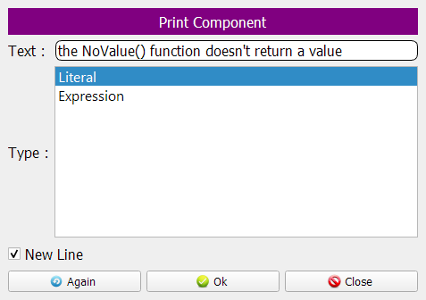
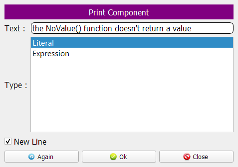
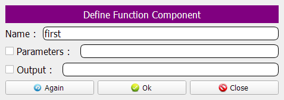
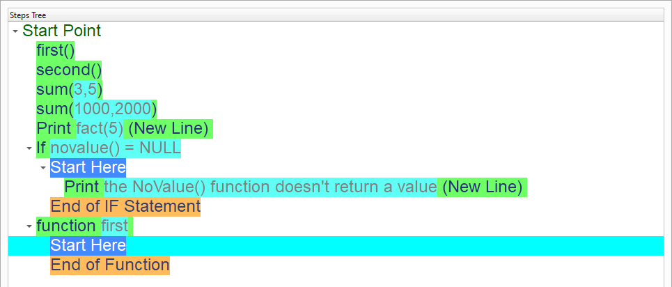
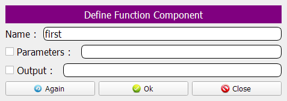
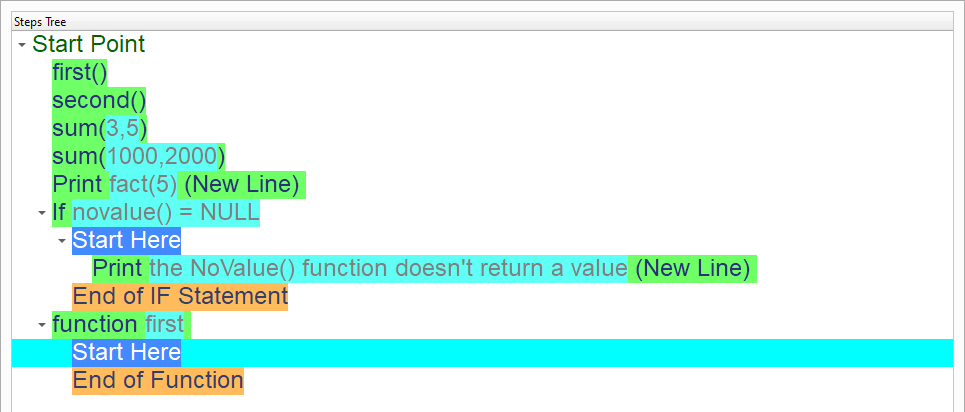
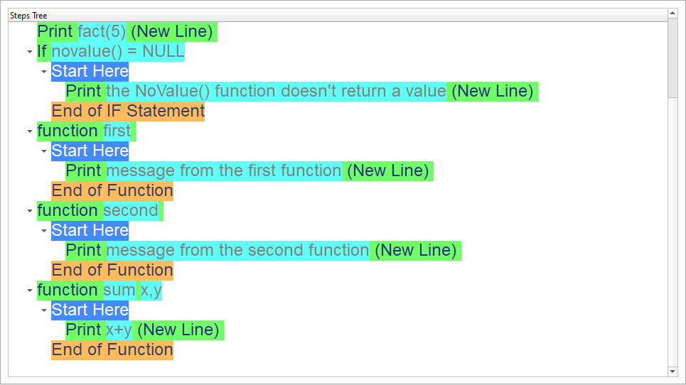
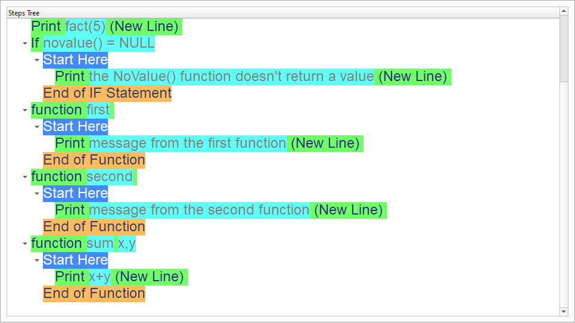
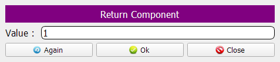
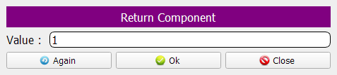

Using Functions
In this chapter we are going to learn about the Using Functions
Introduction
We can create this program quickly using the Quick Start component

Program Steps
After selecting the (Using Functions) template, we will get the next steps in the Goal Designer
The Steps Tree:
first()
second()
sum(3,5)
sum(1000,2000)
Print fact(5) (New Line)
If novalue() = NULL
Print the NoValue() function doesn't return a value (New Line)
End of IF Statement
function first
Print message from the first function (New Line)
End of Function
function second
Print message from the second function (New Line)
End of Function
function sum x,y
Print x+y (New Line)
End of Function
function fact x
If x = 0
Return 1
Else
Return x*fact(x-1)
End of IF Statement
End of Function
function novalue
End of Function
Creating the Program
To create this program we will use the next components
Call Function
If Statement
Else
Define Function
Print Text
Return
In the begining the Steps Tree is empty

Call the first() function


Call the Second() function


Call the Sum() function - Send 3,5 as parameters

Call the Sum() function - Send 1000,2000 as parameters

Call the Fact() function - Send 5 as parameter


Check the output of the NoValue() function


Print a message using the (Print Text) component
 


Define the First() function
 



Print a message from the First() function


Define the Second() function


Print a message from the Second() function


Define the Sum() function
This function takes x,y as parameters
The function will print the sum of x and y


 

Define the Fact() function


 


Define the NoValue() function
Now we have the final Steps Tree in our program